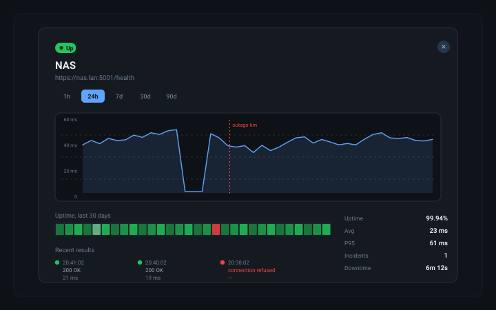
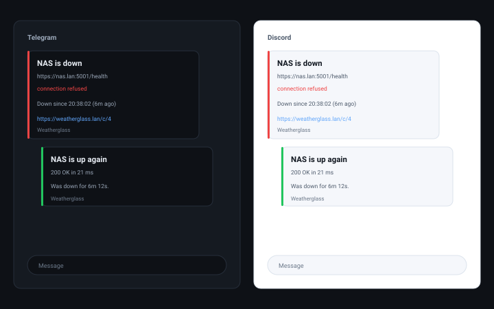

ProbeGlass watches your servers, services and network, and tells you
the moment one of them stops answering. It is one container, one
database file, and about three megabytes of memory — smaller than the
thing it is watching.
The parts of a monitoring setup you actually use, without the parts you
have to operate.
Seven kinds of sensor
HTTP and HTTPS with a status range, a body match and a size cap. TCP
with optional TLS and a send/expect exchange. TLS certificates and
their expiry. ICMP ping. DNS lookups against the resolver you name.
Docker containers, health and restart counts. Single-OID SNMP from a
switch or a router. Configured in the web UI, or declared in a YAML
file.
Alerts that reach you
Telegram, Discord, Matrix, ntfy, Slack, and generic webhooks with an
HMAC signature. Retries before an outage is declared, a reminder while
it lasts, and a recovery message that names the real downtime.
History that stays
Raw samples for seven days, hourly rollups for ninety, daily rollups
forever. Uptime percentages stay correct at every zoom level, because
exactly one resolution answers any given range — no sample is ever
counted twice.
A dashboard you can arrange
Dark, light or follow the system. Six accent colours, two densities,
and five ways to look at the same sensors — cards, a list, a tree
folded by site and then by group, a wall of tiles with a heartbeat,
or a map of where everything physically sits — coastlines, lakes and
rivers, country borders, Austria's districts and the names of countries,
provinces and cities, all drawn from data in the binary
with nothing fetched. Preferences follow the account. It updates over
Server-Sent Events, so a probe landing changes the view without a
reload and without polling.
Scriptable, not locked down
Every request the browser makes, curl can make. An API key for
scripts and Home Assistant, or a session cookie for people. Live
events stream over SSE for anything that wants to subscribe.
Config as code
Sensors and channels can live in a YAML file next to the database.
A rebuild from zero takes seconds, and a file that declares a channel
which does not exist is a startup error rather than a silent
misconfiguration.
The tour
What the three screens you will spend your time on look like.
These are illustrations drawn from the real interface, not screenshots.
Dashboard
Every sensor as a card, grouped the way you grouped them, each with
its current state, response time and a sparkline of the last few
probes. Anything failing sorts to the top of its group. Four more
views sit behind the switcher in the top bar: a list, a tree folded
by site and then by group, a wall of tiles with a heartbeat, and a
map of where the places physically are — drawn from data in the
binary, coastlines, lakes and rivers, country borders, Austria's
districts, and the names of countries, provinces, districts, cities
and towns included.

One sensor, in detail
A response-time chart across 1 hour to a year, an uptime bar for
the same window, latency percentiles, and the list of recent
results — including what the server said when it said no.

The alert
Short enough to read on a lock screen: what broke, what it
answered, since when, and a link straight to the sensor. The
recovery message names how long it was actually down.
These are drawings. If you would rather click the real thing, the whole
dashboard runs in your browser on invented data — open a sensor, follow
a chart across a week, acknowledge an incident.
Each one has its own options; these are the shapes, not the whole set.
The full list is in the documentation.
Type
Target
What it does
http
https://nas.lan:5001/health
Requests the URL and checks the status against an expected range (200-399 by default, also accepts 2xx and comma-separated lists), optionally matches the body and caps how much of it is read.
tcp
nas.lan:445
Opens a connection and closes it, optionally over TLS. Can send a line and wait for a reply, for protocols older than health endpoints.
tls
nas.lan
Connects for the certificate alone and reports the days left. Separates a name that does not match, a certificate that has expired, and a chain this host does not trust — three failures that usually arrive as one.
ping
192.168.1.1
Sends ICMP echo requests and reports the round trip. Tries an unprivileged datagram socket first, so it usually needs no extra capability.
dns
nas.lan via 192.168.1.53
Resolves a name against a specific resolver, optionally expecting particular records. Catches the failure where everything is up but nothing can be found.
docker
homeassistant
One read-only call to the Docker Engine API for one container: is it running, what did its HEALTHCHECK say, how often has it restarted. It never starts, stops or changes anything.
snmp
192.168.1.2
One GET of one OID over v2c, checked against a substring or a numeric range. Enough for a switch, a router or a NAS — deliberately not a walk, not traps and not v3.
Alert channels
Pick per sensor. One noisy service can shout at Telegram while the rest
goes quietly to a webhook.
Channel
Minimum to configure
Also
Telegram
Bot token, chat ID
Message template
Discord
Webhook URL
Message template
Matrix
Homeserver, access token, room ID
Message template
ntfy
Topic
Server, priority, access token
Slack
Incoming webhook URL
Message template
Webhook
URL
HMAC secret, custom headers
Credentials are never returned by the API. Every secret field comes back
as a marker, and sending that marker back preserves the stored value —
so a token is never in a browser cache, a proxy log or a screenshot.
Open http://localhost:8080 and set a password in the
setup wizard. Add --cap-add NET_RAW only if you want to
use ICMP ping sensors; without it ProbeGlass falls back to an
unprivileged ping and tells you in the result if that is not
available either.
The image is on the GitHub Container Registry and is public, so no
account and no docker login is needed. 0.1.0
is the exact version and never changes under you; 0.1
follows its patch releases and latest the newest release
of all. Every build also carries the commit it was made from —
pick
a sha-… tag there if you want one exact build, and
dev if you want whatever is in the tree today.
Compose
git clone https://github.com/j000k3r/probeglass.git
cd probeglass
docker compose up -d
Look at it with data in it
An empty dashboard says very little about whether you want this. The
demo seed writes a set of sensors and a week of synthetic history, so
you can see the charts without waiting for a week to pass.
docker run --rm -v probeglass-demo:/data \
ghcr.io/j000k3r/probeglass:0.1.0 seed --demo
How it compares
There are good monitoring tools already. This one exists for the case
where you want the monitoring to be smaller than the thing it monitors.
ProbeGlass
A typical container-based monitor
Memory at idle
~3 MB
200–400 MB
Install
One container
Container plus a database container
Data
One SQLite file you can copy
A database server, or a volume of JSON
Frontend build
None — embedded in the binary
Usually a Node build step
Works with no internet
Yes, entirely
Often depends on a CDN for assets
Questions that come up
Does it need a database server?
No. It uses SQLite through a pure-Go implementation, so there is
nothing to install alongside it. The database is one file.
Why does a failed probe say “Flaky” and not “Down”?
Because at that moment the honest answer is that the last probe failed
and it has not failed often enough to call it down. With retries
configured, one failed probe is a blip. It becomes Down when the failure
streak reaches the threshold — and that is when the incident opens and the
alert goes out.
Can I keep history for longer than 90 days?
Yes. Daily rollups are kept forever, so a range of a year or more is
already answerable. The retention settings decide how long the fine and
medium detail survives, not how far back you can look.
Can I scrape it from another monitoring stack?
Not directly — there is no /metrics endpoint yet. In the
meantime the JSON API is scrapeable with a small exporter, and the generic
webhook can push every event into whatever you already run.
Multiple users?
Yes, and they have roles. An administrator manages users, sensors and
settings; an operator can additionally acknowledge an outage, pause a
sensor, or run a probe by hand; a viewer reads everything and changes
nothing. Everyone picks their own theme, layout and language, and any
account can turn on a second factor.
Can I use it as a public status page?
Not yet. Today the dashboard is authenticated, full stop. A read-only
public view on its own path and token is on the roadmap.
What happens to my data if I stop using it?
Nothing — it is one file on your disk. There is no account, no
telemetry, and no phone-home. ProbeGlass makes outbound connections only
to the targets you configure and the alert channels you set up.
Who makes this, and how
ProbeGlass is not a product. It is one person's homelab watchdog, written
in their spare time, and that is worth knowing before you install it
anywhere that matters.
A hobby project
One person, spare time, their own homelab — and not a professional
software developer. There is no company behind ProbeGlass, no support
contract, no paid tier and no SLA. It is built for this one homelab and
shared in case somebody is looking for something similar. Issues are read
and patches are welcome — a timeline is not something anybody is
offering.
Vibe coded
The code is written in dialogue with an AI coding agent. Most of it is
written by the agent and then run, measured and argued with until it
behaves; some is written or reworked by hand. There has been no design
review and no security audit, so expect rough edges — and please report
them.
No warranty, no liability
MIT licensed and provided “as is”. Nobody is liable for anything it
does — including data loss, and including a service that was down while
the dashboard said it was fine. Do not make it your only line of
defence.
How it came about, how it is written today, and what that means for you:
Who makes this, and
how in the documentation. If that is not the trade you want to make for a
monitoring tool, that is a completely reasonable position — and the other
tools out there are not the worse for it. ProbeGlass is simply what one
person wanted for one homelab.
Ready when your homelab is
Start the container, set a password, add a sensor. The first alert you
get will be one you would otherwise have found out about from your
partner.